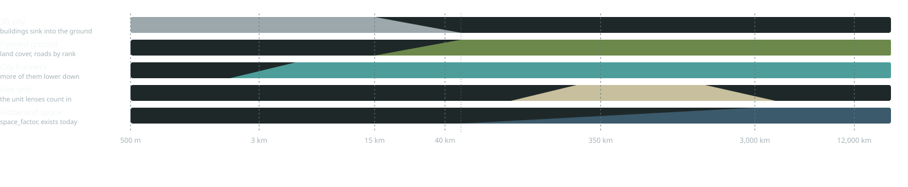

From the street to the globe new
There is no switch between the 3D view and the strategy map. Each layer fades on altitude, the way the
sky and the globe already fade on space_factor today. Below 15 km you are in the 3D city. Between 15 and 50 km the
buildings sink and the ground takes on the painted colours. Above 50 km the painted map is the ground, and it curves into the
globe. Zooming back down plays the same thing in reverse and lands where you looked.
1What fades in and out, by altitude
The 3D city, the painted ground, banners and the hex grid are new. Only the bottom row, globe and space, exists today.

2One zoom out over Utrecht new
The 3, 15 and 40 km frames are captures of today's client on mac-1 (real GPU), with the proposed layers drawn over them.
Banners on the two tilted frames are placed by hand. Every frame from 40 km up is drawn from data, framed to match the client's camera.
 3 km
3 km3D city. As today, plus a banner over the city, so you know where you are before you are high enough to need the map.
 15 km
15 kmThe fade starts. Buildings are still 3D and the haze stays. Banners for the cities in view appear.

 40 km · 70% painted
40 km · 70% paintedMostly painted. These are the same OSM tiles the client already loads, drawn in strategy colours: forest dark, motorways gold, water clear blue.
 350 km
350 kmThe strategy map. Land cover from WorldCover, the hex grid and the country border. This is where the lenses live (sheet v1).
 3,000 km
3,000 kmThe continent. Still nearly flat at this height, because the Earth is wider than the view. Only the largest cities keep a banner. The hex grid gives way to lines of latitude and longitude.
 8,000 km
8,000 kmThe globe. The painted map wrapped on the sphere, with the atmosphere's rim and the stars as they are today.
3Today against the proposal, at the same camera
40 kmtoday 40 kmproposed
 3,000 kmtoday
3,000 kmtoday3,000 kmproposed
 8,000 kmtoday
8,000 kmtoday8,000 kmproposed
What it is made of
- No new map data. Up to about 50 km the painted ground is a second style of the OSM tiles the client already streams. Above that, it is the WorldCover landcover the globe already uses.
- Below 15 km nothing changes, except that city banners appear from 2 km up.
- The fades ride on altitude, as the sky does today, so a fast zoom never jumps.
Open questions
- Clouds. Today's globe draws clouds that hide most of Europe at 3,000 km. In the proposal they are part of the Weather lens, off by default on the strategy map.
- Tilt. A tilted camera at 40 km shows painted ground far away and 3D ground nearby. Should the painted look follow distance rather than camera height?
- Night. The painted globe is drawn in daylight. Should city lights take over on the night side?